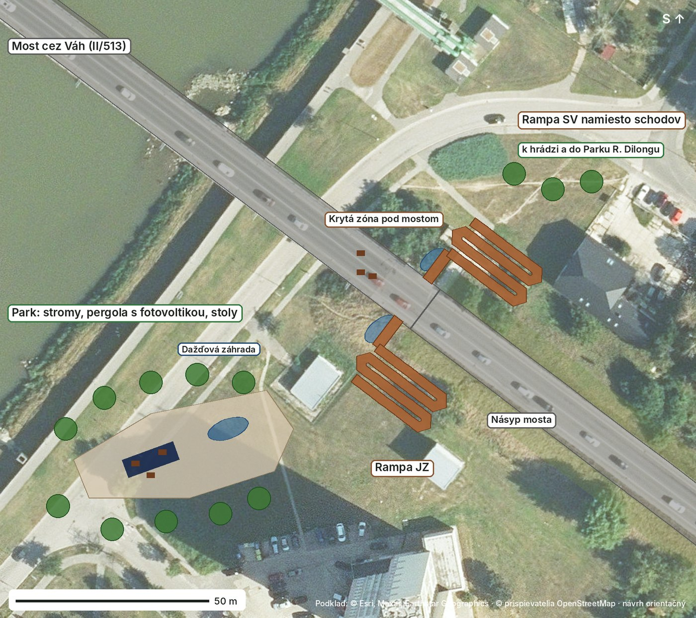

Projektový zámer pre poslancov MsZ Hlohovec
Nevyužitý priestor pri moste a pod ním premeníme na tienistú oddychovú zónu so stromami, lavicami a stolmi. Schody z mosta nahradíme rampami pre chodcov, kočíky, vozíky aj bicykle a zónu prepojíme po hrádzi s Parkom R. Dilongu. Projekt je navrhnutý tak, aby ho mesto mohlo financovať z Nórskych grantov – výzva GRT01.
Pripravil: Lukáš Gajarský · november 2026 · Interaktívny 3D model

| Povinná podmienka výzvy | Riešenie v Hlohovci |
|---|---|
| Žiadateľ – verejný sektor | Mesto Hlohovec (podáva mesto, nie súkromná osoba). |
| Plán adaptácie a odolnosti | Pre mestský úrad ako inštitúciu: horúčavy, prívalové dažde, sucho; podľa metodiky KLIMA-ADAPT (SAŽP). |
| Opatrenia na budove a v areáli | Aspoň jedna mestská budova pri moste a jej areál; zóna pri moste ako verejná ukážková plocha. |
| Najmenej 2 prírode blízke riešenia | Dažďové záhrady s vodou z mosta, vsakovací pás, priepustná dlažba, stromy na tienenie, zelená strecha. |
| Najmenej 1 obnoviteľný zdroj energie | Fotovoltika s batériou na budove; solárna pergola s nabíjaním elektrobicyklov pri zóne. |
| Senzory a internet vecí | Teplota zóna vs. ulica, vlhkosť pôdy, zrážky, výroba energie, počítadlo chodcov a cyklistov na rampách. |
| Zelené riadenie | Smernica mesta o zelenom verejnom obstarávaní, rozhodovanie podľa dát, plánovanie s obyvateľmi. |
| Vzdelávanie a osveta | Škola ako živé laboratórium (žiaci pracujú s dátami), učebňa v prírode, verejné podujatia. |
| Rodová rovnosť a zraniteľné skupiny | Bezbariérové rampy, osvetlenie a bezpečnosť, lavice pre seniorov, priestor pre rodičov s deťmi. |
| Body navyše | Nórsky partner (napr. NVE), univerzita ako partner, okres vystavený horúčavám a suchu (overiť podľa štúdie IEP a OECD). |
Rampy z mosta sú dopravný prvok. Do projektu patria ako bezbariérový prístup k zóne a nesmú tvoriť väčšinu rozpočtu. Ak by vyšli drahšie, financujú sa zvlášť (kraj, výzvy na cyklodopravu).
| Časť | Podiel | Obsah |
|---|---|---|
| Plán adaptácie, dáta, projekt | 5–8 % | klimatické riziká, zraniteľnosť, projektová dokumentácia |
| Pilotná budova a areál | 35–45 % | fotovoltika a batéria, zelená strecha, dažďová záhrada |
| Zóna pri moste | 25–35 % | stromy, dažďové záhrady, povrchy, lavice a stoly, pergola, senzory |
| Rampy z mosta | do 15–20 % | bezbariérový prístup k zóne a hrádzi |
| Vzdelávanie, riadenie, publicita | 5–10 % | živé laboratórium, smernice, podujatia |
Rozdelenie je orientačné, spresní ho projektant a projektový manažér mesta.